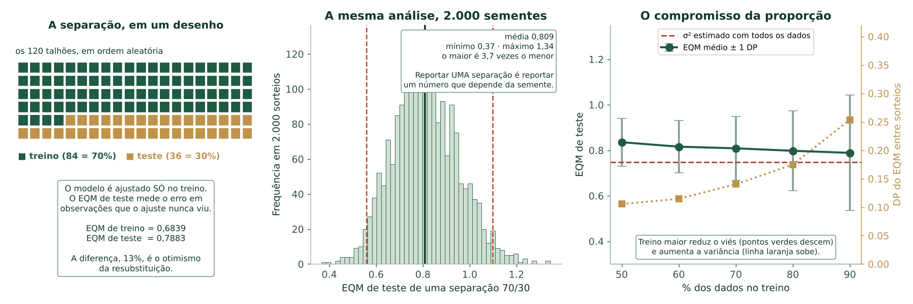
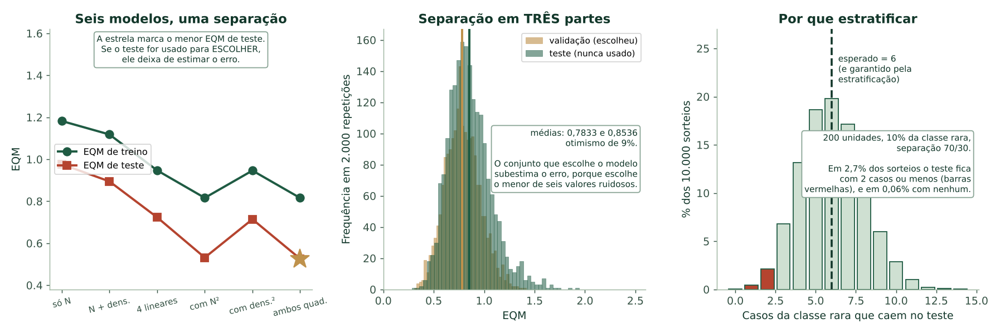

Separação treino–teste (holdout)
Reserva parte das observações para medir o erro do modelo em dados que não participaram do ajuste.
Comece por aqui
Um modelo ajustado a um conjunto de dados sempre parece melhor nesses mesmos dados do que será em dados novos — ele foi construído, afinal, para minimizar o erro ali. A separação treino-teste é a maneira mais simples de medir o desempenho real: reserva-se uma parte das observações, ajusta-se o modelo sem elas e mede-se o erro nessa parte reservada.
Nos dados desta ficha, 2 000 separações 70/30 diferentes do mesmo conjunto, com o mesmo modelo, produzem EQM de teste entre 0,37 e 1,34 — o maior é 3,65 vezes o menor, com coeficiente de variação de 17%. Reportar uma separação é reportar um número que depende de qual semente o analista escolheu.
O que é a separação treino-teste
O procedimento tem três passos: sortear uma partição das observações em treino e teste; ajustar o modelo usando apenas o treino; e calcular a medida de erro no teste. A ideia é que o teste funcione como um substituto de "dados novos", e a condição para isso é que nenhuma informação dele tenha entrado no ajuste.

Há duas quantidades diferentes, e convém não confundi-las. Uma é o erro do modelo que seria ajustado com todos os n dados — é o que interessa, porque é esse o modelo que vai para o campo. A outra é o erro do modelo ajustado com os 70% do treino, que é o que a separação mede. Como treinar com menos dados piora o modelo, a separação superestima o erro do modelo final, e o viés cresce quanto menor for o treino.
Pressupostos e como verificá-los
| Pressuposto | Por que importa | Como verificar |
|---|---|---|
| Observações independentes e identicamente distribuídas | O sorteio aleatório só é válido assim. | Delineamento; com dados agrupados ou temporais, o sorteio simples não serve. |
| Nada do teste entra no ajuste | Qualquer vazamento torna a estimativa otimista. | Padronização, seleção de variáveis e imputação têm de ser feitas SÓ no treino. |
| Teste grande o bastante | Com poucas observações, a estimativa é instável. | Com 36 talhões, o CV da estimativa é 17%. |
| Treino grande o bastante | Com poucas, o modelo fica pior que o final. | Compare o desempenho com diferentes proporções. |
| Classes representadas nos dois conjuntos | Com classes raras, o sorteio pode falhar. | Use separação estratificada. |
| O teste é aberto UMA vez | Cada uso para escolher algo o corrompe. | Protocolo; com seleção, separe três partes. |
| Distribuição estável entre treino e teste | Se os dados mudam no tempo, a separação aleatória engana. | Com séries, separe por tempo, não por sorteio. |
Padronizar as variáveis usando média e desvio-padrão calculados no conjunto inteiro, selecionar preditores pela correlação com a resposta antes de separar, imputar valores faltantes com a média geral, ou escolher o corte de um classificador olhando o teste — todas essas operações fazem informação do teste entrar no modelo. O resultado é uma estimativa otimista, às vezes dramaticamente. A regra é simples: tudo o que depende dos dados é parte do procedimento de ajuste, e tem de ficar dentro do treino.
Formulação e cálculo
Não há hipótese a testar: trata-se de estimar uma quantidade, o erro esperado de predição.
Em que:
- \(L\)
- função de perda; aqui o erro quadrático \((y-\hat y)^2\)
- \(T\)
- conjunto de índices reservados para teste
- \(\hat f_{-T}\)
- modelo ajustado sem as observações de \(T\)
- \(\hat f\)
- modelo ajustado com todas as \(n\) observações
Exemplo numérico, passo a passo
Modelo: produtividade em função de nitrogênio, densidade, matéria orgânica e precipitação, com termos quadráticos para nitrogênio e densidade (7 parâmetros). Separação 70/30 com semente fixada.
| Conjunto | n | EQM | REQM | R² |
|---|---|---|---|---|
| Treino | 84 | 0,6839 | 0,8270 | 0,6777 |
| Teste | 36 | 0,7883 | 0,8879 | 0,7165 |
O EQM de treino é 13,2% menor que o de teste. Essa diferença é o otimismo da resubstituição: os sete coeficientes foram escolhidos para minimizar justamente a soma de quadrados dos 84 talhões do treino, e parte desse ajuste é ao ruído daquelas observações específicas.
O R² de teste ser maior que o de treino, apesar do EQM maior, é um lembrete útil: o R² depende também da variabilidade da resposta no conjunto, e por acaso os 36 talhões do teste eram mais heterogêneos. Entre os dois, o EQM é a medida a comparar.
A variabilidade da estimativa
| Quantidade | Valor |
|---|---|
| Média | 0,8091 |
| Desvio-padrão | 0,1399 |
| Mínimo | 0,3680 |
| Percentil 5 | 0,5925 |
| Mediana | 0,8020 |
| Percentil 95 | 1,0447 |
| Máximo | 1,3432 |
| Coeficiente de variação | 17,3% |
O compromisso da proporção
| Treino | Teste | EQM médio | DP do EQM | Viés aparente* |
|---|---|---|---|---|
| 60 | 60 | 0,8355 | 0,1055 | +0,0867 |
| 72 | 48 | 0,8159 | 0,1147 | +0,0671 |
| 84 | 36 | 0,8087 | 0,1403 | +0,0599 |
| 96 | 24 | 0,7979 | 0,1750 | +0,0491 |
| 108 | 12 | 0,7887 | 0,2537 | +0,0399 |
* diferença em relação a σ² = 0,7488, estimado com os 120 talhões.
Propriedades
- \(\widehat{\text{Err}}_{\text{teste}}\) é não viesado para o erro do modelo ajustado com \(\lvert T^c\rvert\) observações, e viesado para cima para o erro do modelo ajustado com todas as \(n\).
- O viés diminui e a variância aumenta quando a fração de treino cresce: não há proporção ótima universal.
- A variância da estimativa tem duas fontes: o tamanho do teste e a instabilidade do modelo ajustado.
- Usar o teste para escolher entre modelos introduz otimismo adicional, porque se reporta o mínimo de várias estimativas ruidosas.
- Com classes desequilibradas, o sorteio simples pode produzir conjuntos sem representantes de uma classe.
- É o caso \(k=1\) de uma família que inclui a validação cruzada k-fold e a deixa-um-de-fora.
- A separação aleatória pressupõe dados permutáveis; com séries temporais, a separação tem de respeitar a ordem.
Como interpretar os resultados
| Elemento | O que informa | Cuidado |
|---|---|---|
| EQM de teste | A estimativa do erro de predição. | Depende do sorteio; reporte a semente. |
| EQM de treino | O ajuste aos próprios dados. | Não é desempenho. |
| Diferença entre os dois | O otimismo da resubstituição. | Diferença grande sugere sobreajuste. |
| Tamanho do teste | A precisão da estimativa. | Com menos de 30, é muito instável. |
| R² de teste | Variação explicada no teste. | Depende da heterogeneidade do teste. |
| Proporção usada | O viés da estimativa. | Treino menor superestima o erro. |
Ela é adequada quando há dados de sobra — milhares de observações, de modo que mesmo 20% formem um teste grande —, quando o custo computacional de reajustar o modelo várias vezes é proibitivo, ou quando existe uma separação natural a respeitar: safras diferentes, regiões diferentes, períodos diferentes. Nesses casos a separação não é um sorteio, é parte do delineamento, e é justamente o que se quer medir. Com n de algumas centenas e um modelo barato de ajustar, a validação cruzada é preferível.
Como executar no R e em Python
Onde executar o código em Python
Não é preciso instalar nada: o Google Colab é um computador na nuvem, gratuito, que executa Python pelo navegador e já traz as bibliotecas usadas aqui (numpy, scipy e matplotlib).
No R base, sample() sorteia os índices e lm(..., data = milho[tr, ]) ajusta no treino. Para separação estratificada, caret::createDataPartition() ou rsample::initial_split(..., strata = ), que preservam a proporção das classes. O pacote rsample oferece ainda initial_time_split() para séries temporais e group_initial_split() para dados agrupados, em que a separação tem de respeitar os grupos.
set.seed(1)
tr <- sample(nrow(milho), round(0.70*nrow(milho)))
m <- lm(f_completo, data = milho[tr, ])
mean((milho$y[-tr] - predict(m, newdata = milho[-tr, ]))^2)
Exemplo de aplicação
Contexto dos dados
Os dados são fictícios e foram criados pelo autor: 120 talhões de milho, com a produtividade em t/ha e quatro variáveis explicativas — dose de nitrogênio (kg/ha), densidade de plantio (mil plantas/ha), matéria orgânica do solo (%) e precipitação no ciclo (mm). O processo gerador tem resposta quadrática ao nitrogênio e à densidade, e um erro de desvio-padrão 0,85 t/ha. O mesmo conjunto atravessa as fichas de avaliação de modelos, de modo que as estimativas de erro produzidas por cada método podem ser comparadas diretamente.
Código em R
# Separação treino-teste (holdout): exemplo completo ----
# Pacotes: caret, rsample (tidymodels); base R também resolve
# install.packages(c("caret", "rsample"))
# Dados fictícios: 120 talhões de milho. Produtividade (t/ha) em função da
# dose de nitrogênio, densidade de plantio, matéria orgânica e precipitação.
# O arquivo scripts/milho.csv acompanha o repositório.
milho <- read.csv("milho.csv")
str(milho); summary(milho$y)
colMeans(milho)
# O modelo usado em todas as fichas deste grupo
f_completo <- y ~ N + I(N^2) + densidade + I(densidade^2) + mo + chuva
# ---- UMA separação 70/30
set.seed(1)
n <- nrow(milho)
tr <- sample(n, round(0.70*n))
treino <- milho[tr, ]; teste <- milho[-tr, ]
c(treino = nrow(treino), teste = nrow(teste))
m <- lm(f_completo, data = treino)
eqm <- function(obs, prev) mean((obs - prev)^2)
eqm(treino$y, predict(m)) # EQM de treino
eqm(teste$y, predict(m, newdata = teste)) # EQM de teste
# O de treino é sempre menor: é o otimismo da resubstituição.
# ---- A estimativa depende do sorteio
set.seed(7)
est <- replicate(2000, {
i <- sample(n, round(0.70*n))
mm <- lm(f_completo, data = milho[i, ])
eqm(milho$y[-i], predict(mm, newdata = milho[-i, ]))
})
c(media = mean(est), dp = sd(est), min = min(est), max = max(est))
hist(est, breaks = 50, col = "darkseagreen",
xlab = "EQM de teste", main = "2.000 separações 70/30")
# ---- A proporção de treino
for (p in c(0.5, 0.6, 0.7, 0.8, 0.9)) {
v <- replicate(1000, {
i <- sample(n, round(p*n))
mm <- lm(f_completo, data = milho[i, ])
eqm(milho$y[-i], predict(mm, newdata = milho[-i, ]))
})
cat(sprintf("treino %2.0f%%: EQM medio %.4f, DP %.4f\n", 100*p, mean(v), sd(v)))
}
# ---- Separação em TRÊS partes, quando há seleção de modelo
set.seed(3)
i <- sample(n)
treino <- milho[i[1:72], ]; valid <- milho[i[73:96], ]; teste <- milho[i[97:120], ]
cands <- list(y ~ N,
y ~ N + densidade,
y ~ N + densidade + mo + chuva,
y ~ N + I(N^2) + densidade + mo + chuva,
y ~ N + densidade + I(densidade^2) + mo + chuva,
f_completo)
ev <- sapply(cands, function(f) {
mm <- lm(f, data = treino); eqm(valid$y, predict(mm, newdata = valid)) })
j <- which.min(ev)
mm <- lm(cands[[j]], data = treino)
c(validacao = ev[j], teste = eqm(teste$y, predict(mm, newdata = teste)))
# O EQM de validação é otimista; o de teste é a estimativa honesta.
# ---- Separação ESTRATIFICADA, com classes raras
library(rsample)
# div <- initial_split(dados, prop = 0.7, strata = classe)
# treino <- training(div); teste <- testing(div)
library(caret)
# idx <- createDataPartition(dados$classe, p = 0.7, list = FALSE)
# ---- A alternativa: validação cruzada (ver as fichas kfold e loocv)
library(caret)
ctrl <- trainControl(method = "cv", number = 10)
train(f_completo, data = milho, method = "lm", trControl = ctrl)
A mesma análise em Python, com os resultados
Cole o código em um notebook do Google Colab ↗ e execute com Shift+Enter. Os valores abaixo são a saída desse código.
# Bibliotecas: numpy e scipy (ambas já instaladas no Google Colab)
import numpy as np
from scipy import stats
# ===================================================================
# Dados fictícios, criados pelo autor, compartilhados pelas fichas de
# avaliação de modelos: 120 talhões de milho, com a produtividade (t/ha)
# e quatro variáveis: dose de nitrogênio (kg/ha), densidade de plantio
# (mil plantas/ha), matéria orgânica do solo (%) e precipitação no ciclo (mm).
# Colunas: y, N, densidade, materia_organica, chuva
# ===================================================================
MILHO = np.array([
[7.65,40,56.3,1.86,572], [9.35,200,65.2,3.67,736], [6.8,160,71.1,2.46,372], [7.52,80,62.6,3.54,340],
[6.39,0,64,3.17,528], [8.54,160,58.2,2.81,433], [9.29,80,60.3,3.48,530], [6.85,120,59.8,2.58,375],
[8.76,120,60,3.54,532], [8,40,57.8,1.87,638], [5.86,80,64.8,2.27,620], [9.23,200,71.1,3.65,421],
[7.37,160,55.4,1.32,492], [8.55,200,71.8,3.13,600], [5.73,0,59.2,2.51,684], [6.3,80,59.4,2.41,434],
[5.66,0,46.9,2.31,443], [10.2,200,45,3.7,621], [8.84,120,67.1,1.72,488], [7.22,40,54.4,3.38,428],
[8.62,160,67.6,3.13,615], [8.97,160,62.4,2.5,369], [5.58,40,63.8,2.74,458], [8.52,160,71.3,3.29,607],
[6.97,0,61.5,2.38,463], [7.8,80,39.1,1.73,589], [8.8,120,49.8,3,410], [6.51,0,68.8,2.21,590],
[8.1,160,76,2.51,562], [10.13,200,61.3,2.84,666], [8.7,160,57.1,3.32,498], [9.12,120,52.3,4.07,488],
[9.21,200,65.8,3.04,511], [9.56,80,49.4,2.88,614], [7.59,80,53.3,3.37,453], [9,80,63,3,507],
[7.84,80,62.7,1.62,695], [7.23,120,60.2,2.38,590], [5.79,80,69.4,1.93,585], [7.6,80,53.3,3.29,473],
[10.46,120,53.7,3.69,597], [8.81,120,59.1,3.05,415], [6.29,0,62.5,2.08,386], [8.3,80,59.6,3.36,435],
[8.54,80,75.9,2.13,648], [6.05,0,57.8,2.98,535], [3.93,0,66.4,1.96,436], [6.95,40,57.9,1.83,488],
[5.84,40,64.2,1.82,561], [8.31,200,58.9,2.81,626], [7.77,200,59.2,2.34,373], [8.83,160,73.4,3.11,640],
[7.99,80,59.6,1.89,604], [9.28,160,74,3.14,457], [9.28,160,56.8,2.37,484], [10.55,80,58.7,3.68,564],
[6.44,80,69.8,3.51,494], [8.6,200,44.6,2.65,532], [9.92,80,50.3,2.88,425], [8.44,200,62.1,2.97,356],
[7.78,80,65.3,3.12,739], [6.18,40,66,2.61,535], [8.88,200,59.7,3.57,540], [8.22,120,51.9,2.44,566],
[9.58,120,67.8,1.45,640], [8.23,200,65.1,2.97,604], [4.71,0,54,2.72,427], [10.63,160,62.6,3.38,510],
[6.94,40,74.7,3.22,526], [8.58,80,62.9,2.89,589], [8.7,200,53.6,2.88,466], [9.05,80,59,2.89,554],
[5.96,40,59.4,2.34,540], [9.37,120,64.4,1.95,644], [7.89,160,68.4,2.23,285], [9,200,55.3,2.74,527],
[4.34,0,57.4,1.21,551], [9.67,160,69.2,2.49,581], [8.81,160,67.2,2.11,519], [7.04,80,71.6,2.74,445],
[6.92,40,51.6,2.23,580], [7.32,80,55.2,2.84,553], [7.51,40,69.1,2.64,444], [7.03,0,55.2,3.71,397],
[7.94,40,64.3,2.56,570], [7.95,80,61.6,2.63,442], [9.43,120,56.7,2.82,578], [5.06,40,72.4,1.53,656],
[6.3,40,61.9,2.05,539], [6.17,0,58.4,3.81,541], [8.22,80,60.8,3.16,531], [6.58,0,63.7,2.86,645],
[7.46,40,50.8,3.56,646], [6.37,40,55.8,2.67,528], [6.78,0,52.9,2.63,587], [8.54,160,47,2.59,524],
[3.94,0,68.9,1.56,475], [5.5,40,72.2,3.46,589], [6.46,80,70.4,2.67,512], [8.17,120,49.4,2.73,444],
[8.73,200,64.8,2.57,385], [7.1,120,66.8,2.36,609], [5.78,40,57.9,1.22,433], [8.98,200,67.8,2.91,420],
[9.57,160,54,4.33,496], [8.76,80,54.3,3.49,587], [8.66,80,56,2.6,365], [8.29,160,56.8,2.15,577],
[4.35,0,54.8,2.82,555], [4.89,0,68.8,3.06,411], [4.53,0,54.4,2.72,417], [9.05,120,58.7,3.38,504],
[8.82,80,57.4,2.13,694], [9.44,200,77.6,3.55,497], [9.43,120,55.6,2.91,618], [6.77,0,65.3,2.42,605],
[8.24,200,74.9,2.6,377], [10.17,200,53.6,3.04,520], [7.96,40,56.1,3.33,609], [5.79,0,59.6,2.85,475]])
y = MILHO[:, 0]; Xv = MILHO[:, 1:]
nomes = ["nitrogênio", "densidade", "mat. orgânica", "chuva"]
n = len(y)
def monta(X, grau_n=1, grau_d=1):
"""Matriz de delineamento: intercepto, as quatro variáveis e termos
quadráticos opcionais para nitrogênio e densidade."""
cols = [np.ones(len(X))] + [X[:, j] for j in range(4)]
if grau_n >= 2: cols.append(X[:, 0]**2)
if grau_d >= 2: cols.append(X[:, 1]**2)
return np.column_stack(cols)
def ajusta(Xd, yy):
return np.linalg.lstsq(Xd, yy, rcond=None)[0]
def eqm(obs, prev):
return float(np.mean((obs - prev)**2))
# ===================================================================
# PARTE 1 - uma separação treino-teste, feita uma vez
# ===================================================================
print(f"{n} talhões de milho, produtividade média {y.mean():.3f} t/ha "
f"(DP {y.std(ddof=1):.3f})")
print("Modelo: produtividade ~ N + densidade + mat. orgânica + chuva,")
print("com termos quadráticos para N e densidade.")
rng = np.random.default_rng(1)
idx = rng.permutation(n)
ntr = int(0.70*n)
tr, te = idx[:ntr], idx[ntr:]
print(f"\nSeparação 70/30: {len(tr)} talhões no treino, {len(te)} no teste")
Xd = monta(Xv, 2, 2)
b = ajusta(Xd[tr], y[tr])
eqm_tr = eqm(y[tr], Xd[tr] @ b)
eqm_te = eqm(y[te], Xd[te] @ b)
print(f"\n{'conjunto':<12}{'n':>6}{'EQM':>12}{'REQM':>10}{'R²':>9}")
for rot, m_, ee in [("treino", tr, eqm_tr), ("teste", te, eqm_te)]:
r2 = 1 - ee/np.mean((y[m_] - y[tr].mean())**2)
print(f"{rot:<12}{len(m_):>6}{ee:>12.4f}{np.sqrt(ee):>10.4f}{r2:>9.4f}")
print(f"\nO EQM de treino é {100*(1-eqm_tr/eqm_te):.1f}% menor que o de teste.")
print("A diferença é o otimismo da reclassificação: o modelo foi ajustado")
print("para minimizar o erro justamente nas observações do treino.")
# ===================================================================
# PARTE 2 - o problema: a estimativa depende da separação sorteada
# ===================================================================
print("\n" + "=" * 70)
print("A MESMA análise, repetida com 2.000 separações 70/30 diferentes")
rng = np.random.default_rng(7)
est = []
for _ in range(2000):
i2 = rng.permutation(n); t2, s2 = i2[:ntr], i2[ntr:]
bb = ajusta(Xd[t2], y[t2])
est.append(eqm(y[s2], Xd[s2] @ bb))
est = np.array(est)
print(f"\n EQM de teste: média {est.mean():.4f}, DP {est.std(ddof=1):.4f}")
print(f" mínimo {est.min():.4f} | percentil 5 {np.percentile(est,5):.4f} "
f"| mediana {np.median(est):.4f}")
print(f" percentil 95 {np.percentile(est,95):.4f} | máximo {est.max():.4f}")
print(f" razão entre o maior e o menor: {est.max()/est.min():.2f} vezes")
print(f" coeficiente de variação: {100*est.std(ddof=1)/est.mean():.1f}%")
print("\nA mesma análise, nos mesmos dados, com o mesmo modelo, produz um EQM")
print(f"de teste entre {est.min():.2f} e {est.max():.2f} conforme o sorteio. Reportar UMA")
print("separação é reportar um número que depende da semente aleatória.")
# ===================================================================
# PARTE 3 - a proporção de treino: o compromisso
# ===================================================================
print("\n" + "=" * 70)
print("Qual proporção usar? O compromisso entre VIÉS e VARIÂNCIA da estimativa.")
print("Treino pequeno: o modelo fica pior do que ficaria com todos os dados,")
print("e o EQM é superestimado. Teste pequeno: a estimativa fica instável.")
rng = np.random.default_rng(11)
b_full = ajusta(Xd, y)
print(f"\n{'treino':>8}{'teste':>8}{'EQM médio':>13}{'DP do EQM':>12}"
f"{'viés aparente':>16}")
# referência: erro verdadeiro do modelo ajustado com TODOS os dados,
# estimado em dados novos simulados do mesmo processo
sig = np.sqrt(np.sum((y - Xd @ b_full)**2)/(n - Xd.shape[1]))
for frac in [0.50, 0.60, 0.70, 0.80, 0.90]:
k = int(frac*n); vals = []
for _ in range(3000):
i2 = rng.permutation(n); t2, s2 = i2[:k], i2[k:]
bb = ajusta(Xd[t2], y[t2])
vals.append(eqm(y[s2], Xd[s2] @ bb))
vals = np.array(vals)
print(f"{k:>8}{n-k:>8}{vals.mean():>13.4f}{vals.std(ddof=1):>12.4f}"
f"{vals.mean()-sig**2:>16.4f}")
print(f"\n(σ² estimado com todos os {n} dados = {sig**2:.4f})")
print("Treinos maiores reduzem o viés e AUMENTAM a variância da estimativa,")
print("porque sobra menos para testar. Não há proporção ótima universal; a")
print("faixa de 70% a 80% é a convenção, e a validação cruzada existe")
print("justamente para não ter de escolher.")
# ===================================================================
# PARTE 4 - o uso indevido mais comum: o teste usado duas vezes
# ===================================================================
print("\n" + "=" * 70)
print("Se o conjunto de teste for usado para ESCOLHER o modelo, ele deixa")
print("de estimar o erro. Demonstração: seis modelos candidatos, e o teste")
print("usado para escolher o melhor deles.")
modelos = [("só nitrogênio", lambda X: np.column_stack([np.ones(len(X)), X[:,0]])),
("N + densidade", lambda X: np.column_stack([np.ones(len(X)), X[:,0], X[:,1]])),
("as quatro, linear", lambda X: monta(X, 1, 1)),
("com N²", lambda X: monta(X, 2, 1)),
("com densidade²", lambda X: monta(X, 1, 2)),
("com os dois quadráticos", lambda X: monta(X, 2, 2))]
rng = np.random.default_rng(3)
i2 = rng.permutation(n); t2, s2 = i2[:ntr], i2[ntr:]
print(f"\n{'modelo':<26}{'p':>4}{'EQM treino':>13}{'EQM teste':>12}")
eq_te = []
for rot, f in modelos:
Xm = f(Xv); bb = ajusta(Xm[t2], y[t2])
a, t_ = eqm(y[t2], Xm[t2]@bb), eqm(y[s2], Xm[s2]@bb)
eq_te.append(t_)
print(f"{rot:<26}{Xm.shape[1]:>4}{a:>13.4f}{t_:>12.4f}")
jmin = int(np.argmin(eq_te))
print(f"\nO menor EQM de teste é o do modelo '{modelos[jmin][0]}': "
f"{eq_te[jmin]:.4f}.")
print("Esse número NÃO é uma estimativa honesta do erro desse modelo em dados")
print("novos: ele é o mínimo de seis estimativas ruidosas, e portanto")
print("enviesado para baixo. Quanto? A simulação a seguir mede.")
rng = np.random.default_rng(23)
vies = []
for _ in range(2000):
i3 = rng.permutation(n)
t3, v3, s3 = i3[:72], i3[72:96], i3[96:] # treino, validação, teste
eqv, eqs = [], []
for rot, f in modelos:
Xm = f(Xv); bb = ajusta(Xm[t3], y[t3])
eqv.append(eqm(y[v3], Xm[v3]@bb))
eqs.append(eqm(y[s3], Xm[s3]@bb))
j = int(np.argmin(eqv))
vies.append((eqv[j], eqs[j]))
vies = np.array(vies)
print(f"\nSeparação em TRÊS partes (72 treino, 24 validação, 24 teste),")
print("2.000 repetições. O modelo é escolhido pela validação e avaliado")
print("no teste, que nunca foi usado para escolher nada.")
print(f" EQM no conjunto de VALIDAÇÃO (usado para escolher) = {vies[:,0].mean():.4f}")
print(f" EQM no conjunto de TESTE (nunca usado) = {vies[:,1].mean():.4f}")
print(f" otimismo = {vies[:,1].mean()-vies[:,0].mean():.4f} "
f"({100*(vies[:,1].mean()/vies[:,0].mean()-1):.1f}%)")
print("\nO conjunto usado para escolher subestima o erro em cerca de 9%, e o")
print("efeito cresce com o número de modelos comparados.")
print("É por isso que, quando há seleção de modelo, a separação precisa ser")
print("em TRÊS partes: treino para ajustar, validação para escolher, teste")
print("para estimar o erro - e o teste é aberto uma única vez, no fim.")
# ===================================================================
# PARTE 5 - estratificação, e quando ela importa
# ===================================================================
print("\n" + "=" * 70)
print("Em problemas de CLASSIFICAÇÃO com classes raras, uma separação")
print("aleatória pode produzir conjuntos muito desequilibrados.")
rng = np.random.default_rng(5)
N_, prev = 200, 0.10
print(f"\nSimulação: {N_} unidades, {100*prev:.0f}% da classe rara, "
f"separação 70/30, 10.000 sorteios")
rotulos = np.r_[np.ones(int(N_*prev)), np.zeros(N_-int(N_*prev))]
prop = []
for _ in range(10000):
i4 = rng.permutation(N_); s4 = i4[int(0.7*N_):]
prop.append(rotulos[s4].sum())
prop = np.array(prop)
print(f" casos da classe rara no teste: esperado "
f"{prev*N_*0.3:.1f}, observado de {prop.min():.0f} a {prop.max():.0f}")
print(f" em {100*np.mean(prop <= 2):.2f}% dos sorteios o teste tem 2 casos ou menos")
print(f" em {100*np.mean(prop == 0):.3f}% dos sorteios o teste não tem NENHUM")
print("A separação ESTRATIFICADA sorteia dentro de cada classe e garante a")
print("mesma proporção nos dois conjuntos. Com classes raras, séries")
print("temporais ou dados agrupados, a separação puramente aleatória não serve.")
Resultados da execução
120 talhões de milho, produtividade média 7.757 t/ha (DP 1.529)
Modelo: produtividade ~ N + densidade + mat. orgânica + chuva,
com termos quadráticos para N e densidade.
Separação 70/30: 84 talhões no treino, 36 no teste
conjunto n EQM REQM R²
treino 84 0.6839 0.8270 0.6777
teste 36 0.7883 0.8879 0.7165
O EQM de treino é 13.2% menor que o de teste.
A diferença é o otimismo da reclassificação: o modelo foi ajustado
para minimizar o erro justamente nas observações do treino.
======================================================================
A MESMA análise, repetida com 2.000 separações 70/30 diferentes
EQM de teste: média 0.8091, DP 0.1399
mínimo 0.3680 | percentil 5 0.5925 | mediana 0.8020
percentil 95 1.0447 | máximo 1.3432
razão entre o maior e o menor: 3.65 vezes
coeficiente de variação: 17.3%
A mesma análise, nos mesmos dados, com o mesmo modelo, produz um EQM
de teste entre 0.37 e 1.34 conforme o sorteio. Reportar UMA
separação é reportar um número que depende da semente aleatória.
======================================================================
Qual proporção usar? O compromisso entre VIÉS e VARIÂNCIA da estimativa.
Treino pequeno: o modelo fica pior do que ficaria com todos os dados,
e o EQM é superestimado. Teste pequeno: a estimativa fica instável.
treino teste EQM médio DP do EQM viés aparente
60 60 0.8355 0.1055 0.0867
72 48 0.8159 0.1147 0.0671
84 36 0.8087 0.1403 0.0599
96 24 0.7979 0.1750 0.0491
108 12 0.7887 0.2537 0.0399
(σ² estimado com todos os 120 dados = 0.7488)
Treinos maiores reduzem o viés e AUMENTAM a variância da estimativa,
porque sobra menos para testar. Não há proporção ótima universal; a
faixa de 70% a 80% é a convenção, e a validação cruzada existe
justamente para não ter de escolher.
======================================================================
Se o conjunto de teste for usado para ESCOLHER o modelo, ele deixa
de estimar o erro. Demonstração: seis modelos candidatos, e o teste
usado para escolher o melhor deles.
modelo p EQM treino EQM teste
só nitrogênio 2 1.1824 0.9766
N + densidade 3 1.1183 0.8947
as quatro, linear 5 0.9473 0.7237
com N² 6 0.8162 0.5318
com densidade² 6 0.9463 0.7143
com os dois quadráticos 7 0.8159 0.5263
O menor EQM de teste é o do modelo 'com os dois quadráticos': 0.5263.
Esse número NÃO é uma estimativa honesta do erro desse modelo em dados
novos: ele é o mínimo de seis estimativas ruidosas, e portanto
enviesado para baixo. Quanto? A simulação a seguir mede.
Separação em TRÊS partes (72 treino, 24 validação, 24 teste),
2.000 repetições. O modelo é escolhido pela validação e avaliado
no teste, que nunca foi usado para escolher nada.
EQM no conjunto de VALIDAÇÃO (usado para escolher) = 0.7833
EQM no conjunto de TESTE (nunca usado) = 0.8536
otimismo = 0.0703 (9.0%)
O conjunto usado para escolher subestima o erro em cerca de 9%, e o
efeito cresce com o número de modelos comparados.
É por isso que, quando há seleção de modelo, a separação precisa ser
em TRÊS partes: treino para ajustar, validação para escolher, teste
para estimar o erro - e o teste é aberto uma única vez, no fim.
======================================================================
Em problemas de CLASSIFICAÇÃO com classes raras, uma separação
aleatória pode produzir conjuntos muito desequilibrados.
Simulação: 200 unidades, 10% da classe rara, separação 70/30, 10.000 sorteios
casos da classe rara no teste: esperado 6.0, observado de 0 a 14
em 2.66% dos sorteios o teste tem 2 casos ou menos
em 0.060% dos sorteios o teste não tem NENHUM
A separação ESTRATIFICADA sorteia dentro de cada classe e garante a
mesma proporção nos dois conjuntos. Com classes raras, séries
temporais ou dados agrupados, a separação puramente aleatória não serve.
| Modelo | p | EQM de treino | EQM de teste |
|---|---|---|---|
| Só nitrogênio | 2 | 1,1824 | 0,9766 |
| N + densidade | 3 | 1,1183 | 0,8947 |
| As quatro, lineares | 5 | 0,9473 | 0,7237 |
| Com N² | 6 | 0,8162 | 0,5318 |
| Com densidade² | 6 | 0,9463 | 0,7143 |
| Com os dois quadráticos | 7 | 0,8159 | 0,5263 |
| Conjunto | Papel | EQM médio |
|---|---|---|
| Validação | escolheu o modelo | 0,7833 |
| Teste | nunca foi usado | 0,8536 |
| Otimismo | — | +0,0703 (9,0%) |
| Resultado | Frequência em 10 000 sorteios |
|---|---|
| Casos da classe rara no teste (esperado 6) | de 0 a 14 |
| Teste com 2 casos ou menos | 2,66% |
| Teste com NENHUM caso | 0,06% |
Leitura: na separação sorteada, o EQM de teste é 0,7883 contra 0,6839 no treino. A diferença de 13% é modesta porque o modelo tem apenas 7 parâmetros para 84 observações de treino; com modelos mais flexíveis ou amostras menores, o otimismo da resubstituição é muito maior.
A tabela dos seis modelos mostra o padrão que justifica todo o procedimento: o EQM de treino cai monotonicamente à medida que se acrescentam parâmetros — ele sempre cai, porque mais parâmetros permitem seguir melhor os dados de ajuste. O EQM de teste, não: ele cai até o modelo com N² e praticamente estabiliza. É essa diferença de comportamento que torna o conjunto reservado útil.
Sobre o otimismo da seleção: esta é a parte mais importante da ficha. Se o conjunto reservado for usado para escolher entre os seis modelos, o menor valor que ele devolve deixa de ser uma estimativa honesta — é o mínimo de seis estimativas ruidosas, e portanto enviesado para baixo. A simulação quantifica: com separação em três partes, o conjunto de validação devolve em média 0,7833 e o de teste, 0,8536. O otimismo é de 9%, e cresce com o número de modelos comparados. A consequência prática é que o conjunto de teste precisa ser aberto uma única vez, no fim de tudo.
Sobre a estratificação: com classes raras o sorteio simples é arriscado. Em uma amostra de 200 unidades com 10% de classe rara, 2,7% dos sorteios deixam o teste com dois casos ou menos, e em 0,06% deles o teste não tem nenhum — caso em que a sensibilidade sequer é calculável. A separação estratificada, que sorteia dentro de cada classe, elimina o problema sem custo algum. O mesmo raciocínio vale para dados agrupados (talhões da mesma fazenda, medidas do mesmo paciente), em que a separação deve respeitar os grupos, e para séries temporais, em que deve respeitar a ordem.
Erros comuns
| Erro | Como evitar |
|---|---|
| Reportar o erro de resubstituição como desempenho | Ele é otimista por construção. |
| Usar o conjunto de teste para escolher o modelo | Separe três partes: treino, validação e teste. |
| Padronizar ou imputar usando os dados inteiros | Tudo o que depende dos dados fica no treino. |
| Selecionar variáveis antes de separar | A seleção é parte do ajuste. |
| Reportar uma única separação sem a semente | O número depende dela. |
| Sortear aleatoriamente séries temporais | A separação tem de respeitar a ordem. |
| Sortear observações de dados agrupados | Separe por grupo, não por observação. |
| Não estratificar com classes raras | O teste pode ficar sem casos. |
| Usar teste pequeno demais | Com menos de 30, o CV da estimativa passa de 20%. |
| Reabrir o teste depois de ver o resultado | Cada reabertura o corrompe um pouco mais. |
Alternativas e fluxo de trabalho
| Procedimento | Quando preferir |
|---|---|
| Validação cruzada k-fold | n de dezenas a milhares: usa todos os dados e é muito mais estável. |
| Validação cruzada repetida | Quando se quer eliminar a variabilidade do sorteio. |
| Deixa-um-de-fora | n pequeno; com modelos lineares, sai de graça pelo atalho da alavancagem. |
| Bootstrap (0,632 e fora-da-bolsa) | Quando se quer também o erro-padrão de outras estatísticas. |
| Validação cruzada aninhada | Quando há seleção de modelo ou ajuste de hiperparâmetros. |
| Separação temporal (rolling origin) | Séries temporais: treinar no passado, testar no futuro. |
| Separação por grupo | Dados agrupados: todos os registros de um grupo do mesmo lado. |
| AIC, BIC e Cp de Mallows | Modelos lineares: critérios analíticos, sem reamostragem. |
| Conjunto de teste externo | Quando há dados de outra safra, região ou laboratório. |
- Defina a medida de erro antes de ver os dados.
- Decida se a separação deve ser aleatória, estratificada, por grupo ou temporal.
- Separe ANTES de qualquer pré-processamento que dependa dos dados.
- Se houver seleção de modelo, separe em três partes.
- Ajuste no treino e avalie no teste, uma única vez.
- Reporte a semente, a proporção e o tamanho de cada conjunto.
- Reporte os dois erros, de treino e de teste, e comente a diferença.
- Se n permitir, prefira a validação cruzada e use a separação só para o teste final.
Referências desta ficha
- STONE, M. Cross-validatory choice and assessment of statistical predictions. Journal of the Royal Statistical Society: Series B, v. 36, n. 2, p. 111-147, 1974.
- GEISSER, Seymour. The predictive sample reuse method with applications. Journal of the American Statistical Association, v. 70, n. 350, p. 320-328, 1975.
- KOHAVI, Ron. A study of cross-validation and bootstrap for accuracy estimation and model selection. In: Proceedings of the 14th International Joint Conference on Artificial Intelligence. San Francisco: Morgan Kaufmann, 1995. p. 1137-1143.
- VARMA, Sudhir; SIMON, Richard. Bias in error estimation when using cross-validation for model selection. BMC Bioinformatics, v. 7, art. 91, 2006.
- ARLOT, Sylvain; CELISSE, Alain. A survey of cross-validation procedures for model selection. Statistics Surveys, v. 4, p. 40-79, 2010.
- HASTIE, Trevor; TIBSHIRANI, Robert; FRIEDMAN, Jerome. The elements of statistical learning. 2. ed. New York: Springer, 2009.
- JAMES, Gareth; WITTEN, Daniela; HASTIE, Trevor; TIBSHIRANI, Robert. An introduction to statistical learning: with applications in R. 2. ed. New York: Springer, 2021.
- PICARD, Richard R.; BERK, Kenneth N. Data splitting. The American Statistician, v. 44, n. 2, p. 140-147, 1990.
- HARRELL, Frank E. Regression modeling strategies. 2. ed. Cham: Springer, 2015.
- KAUFMAN, Shachar; ROSSET, Saharon; PERLICH, Claudia; STITELMAN, Ori. Leakage in data mining: formulation, detection, and avoidance. ACM Transactions on Knowledge Discovery from Data, v. 6, n. 4, art. 15, 2012.
- ROBERTS, David R. et al. Cross-validation strategies for data with temporal, spatial, hierarchical, or phylogenetic structure. Ecography, v. 40, n. 8, p. 913-929, 2017.
- R CORE TEAM. R: a language and environment for statistical computing. Vienna: R Foundation for Statistical Computing, 2026. Disponível em: https://www.r-project.org/.
- KUHN, Max. Building predictive models in R using the caret package. Journal of Statistical Software, v. 28, n. 5, p. 1-26, 2008.
- KUHN, Max; WICKHAM, Hadley. Tidymodels: a collection of packages for modeling and machine learning using tidyverse principles. Disponível em: https://www.tidymodels.org.
- POSIT TEAM. RStudio: integrated development environment for R. Boston: Posit Software, PBC. Disponível em: https://posit.co/download/rstudio-desktop/.
- VIRTANEN, Pauli et al. SciPy 1.0: fundamental algorithms for scientific computing in Python. Nature Methods, v. 17, p. 261-272, 2020. DOI: 10.1038/s41592-019-0686-2. (Funções do módulo
scipy.stats.) - HARRIS, Charles R. et al. Array programming with NumPy. Nature, v. 585, p. 357-362, 2020. DOI: 10.1038/s41586-020-2649-2.
- HUNTER, John D. Matplotlib: a 2D graphics environment. Computing in Science & Engineering, v. 9, n. 3, p. 90-95, 2007.
- GOOGLE. Google Colaboratory. Disponível em: https://colab.research.google.com/.
- As figuras desta ficha foram elaboradas pelo autor.

Prof. Dr. Cássius Henrique Xavier Oliveira
Professor · ICTIN/UFLA · Estatística, Confiabilidade e Ciência de Dados.
Conheça minha trajetória e projetos →